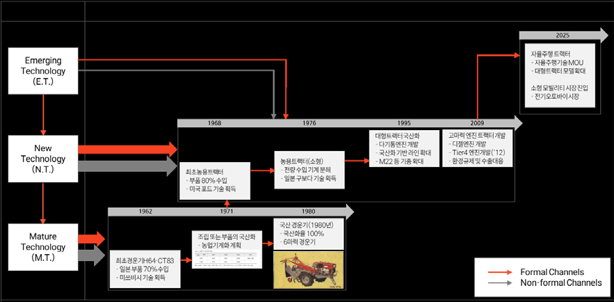
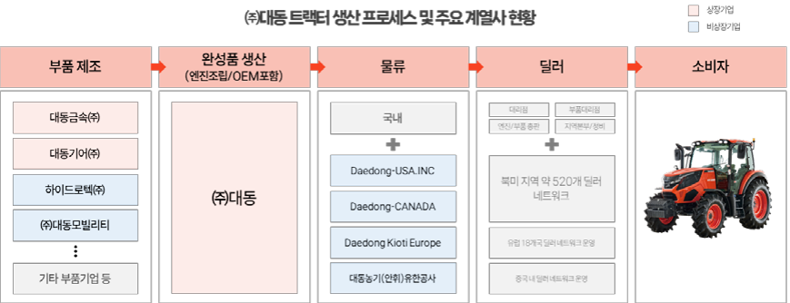
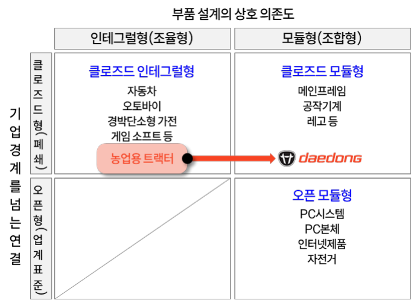
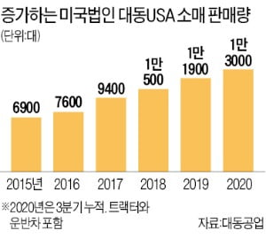

Daedong has held the top position in Korea's agricultural machinery market for 78 years since its founding in 1947, and by 2022 had risen into the top three in North America's compact tractor segment (under 100 horsepower) with an 8.8% share. This study analyzes the innovation strategy of Korea's leading agricultural machinery manufacturer and draws out four success factors: localizing technology through technology partnerships, vertical integration, building a production system through modularization, and targeting a niche market.
Korea is the most manufacturing-centered of the major economies apart from China, with manufacturing value added at 26.6% of GDP in 2023. Yet the agricultural machinery industry, part of the general machinery sector that carries the largest weight within manufacturing, is worth only KRW 5.98 trillion counting domestic sales and exports together — just 0.288% of all manufacturing — and the domestic market is stagnating. By contrast the global agricultural machinery market is growing at a CAGR of 5.7% on expectations of a prolonged food crisis (worth about KRW 200 trillion in 2021), with four leading firms from advanced economies — John Deere, Kubota, CNH and AGCO — holding more than 35% of the total market.
Against that backdrop, Korea's agricultural machinery market is unusual in that three domestic firms hold a majority. By 2023 domestic revenue Daedong leads with a 30.2% share, followed by LS Mtron (16.2%) and TYM (15.8%). With the world agricultural machinery market forecast to grow at 5.7% a year while Korea's has stood still for a decade, Daedong's case — holding first place at home for over 70 years since founding and reaching third place in North America — is significant as an innovation case at a domestic firm in a market with clear inherent limits.
The study narrows its scope to tractors, the largest market segment as of 2021, and within that to agricultural tractors under 100 hp and to North America, the world's second-largest market at 26.3%. Despite the temptation to expand into the automotive industry, Daedong has devoted itself solely to agricultural machinery under the philosophy of its founding chairman Kim Sam-man, that "agriculture must be the foundation of the nation's development and growth." It made Korea's agricultural machinery history with a series of industry firsts — the power tiller in 1962, the agricultural tractor in 1968, the combine harvester in 1971 and the rice transplanter in 1973 — and has recorded revenue above KRW 1 trillion for three consecutive years since 2021. Its growth strategy divides into an introduction period (1947–1983), a growth period driven by architectural innovation (1984–2017) and an expansion period driven by the growth of the hobby farm market (2018 onward).
The study uses three theoretical frames. First, "windows of opportunity" and technological catch-up theory: Perez and Soete (1988) hold that changes in the techno-economic paradigm, recessions and shifts in demand conditions, and changes in government regulation, legislation and industrial policy open entry opportunities for latecomers, while developing countries advance technology in three stages — acquiring, absorbing and developing the technology of advanced countries (Lee Jin-joo et al., 1988). Second, architecture theory: product architecture divides into modular and integral (fine-tuning) types, and Fujimoto (2007) adds an open–closed axis to give three types — closed integral, closed modular and open modular — arguing that firms should position their architecture strategically to suit their organizational capability and market environment. Third, niche market strategy: Kotler (2003) holds that niche customers have distinctive needs and are willing to pay a premium, that competitors are less likely to enter, and that a niche marketer can obtain economies of scale through specialization.
Daedong actively used government policy support and technology partnerships as windows of opportunity. As the first and second five-year economic development plans emphasized fostering the agricultural machinery industry and the need for localization, Daedong brought in technology from Japan's Mitsubishi Heavy Industries in 1962 to produce Korea's first power tiller, and in 1969 brought in Ford technology to produce Korea's first tractor. When financing support under the Agricultural Mechanization Five-Year Plan (1972–1976) cut farmers' contribution toward a power tiller from 50% to 30%, distribution roughly doubled from 6,200 to 12,000 units, and Daedong — technologically ahead — secured a dominant position in the market.
A technology partnership did not mean the advanced firms taught everything. They withheld the subtle points, so Daedong brought in a single Mitsubishi power tiller, took it apart and localized it through gradual imitation, building up know-how as tacit knowledge. Localization began in sheet metal and extended to casting and machining, raising the localization rate from about 30% in 1963 to 65% in 1970, 85% in 1972 and 100% by 1980. For tractors, after first production in 1969 (47 hp, 20% localized), a technology partnership with Japan's Kubota in 1976 began production of a 22 hp compact tractor, reaching 100% localization in 1983.

The results of absorbing advanced technology also show in the patent analysis. Total patents at Korea's three tractor makers stand at 248 for Daedong, 320 for LS Mtron and 49 for TYM, with LS Mtron holding the most; but on gateway patents (five or more citations made or received) the counts are 24 for Daedong, 15 for LS Mtron and 4 for TYM, suggesting that Daedong absorbed advanced technology and diffused a great deal of it domestically through the mid-2010s.
Agricultural machinery, like the automotive industry, is a mechanical product with a highly integral architecture formed from the combination of many components. Daedong adopted a vertical integration strategy in which core components are produced by independent affiliates: Daedong Gear for precision gears and drive shafts, Daedong Mobility for localizing roller drive chains, Daedong Metal — the first in Korea to mass-produce cylinder blocks and heads for diesel engines — and Hydrotech for hydraulic components for agricultural machinery. Each affiliate runs its own research institute and R&D organization, strengthening independent R&D capability while building an interconnected technology ecosystem, and Daedong itself concentrates on internalizing engine technology and assembling the finished product. At Daedong proper, more than 15% of employees work in R&D and R&D spending is held at about 2% of revenue.

As a result of vertical integration, Daedong filed patents intensively in the early 2000s and pre-empted the technology, whereas competitor LS Mtron's filings cluster in the early 2010s — a clear difference in timing. Each affiliate, building on R&D capability accumulated in agricultural machinery, secured leading firms in downstream industries as customers, including Hyundai Motor and Hyundai Construction Equipment. Where LS Mtron diversified into injection moulding machines and electronic components and TYM into filters, Daedong is distinguished by comprehensive vertical integration across agricultural machinery components. Tractor patent network analysis also shows a great many patents co-filed among affiliates, confirming that each affiliate, while operating independently, collaborates closely around the goal of producing the finished machine.
Daedong designed its early tractors on a closed integral architecture but gradually modularized the structure, shifting to a closed modular architecture. A tractor divides into five major sections — engine, transaxle, three-point hitch, front axle and cabin — with the engine and cabin designed by Daedong, the transaxle by Daedong Gear, implements and chains by Daedong Mobility and hydraulics by Daedong Metal, with final assembly at Daedong.

Modularization enabled mixed-model production, allowing various tractor models to be built on the same line. Producing two or more products simultaneously on one line responded effectively both to the high-mix, low-volume character of agricultural machinery and to the seasonality of an industry where demand concentrates in particular periods. Even where emissions standards differ by country, modular design of the engine and exhaust systems minimized additional design changes and cost. As a result, Daedong's tractor range as of June 2024 spans 16 series and 92 product groups, an average of five derivative models per series. Modularity also made engine production automatable: an engine line capable of 60 units a day is managed by just two or three people. This differs markedly from the Japanese production model built on shop-floor skill; unlike Kubota, which concentrates on an integral architecture, Daedong has even built a system allowing customers to buy genuine parts directly through an online store and carry out their own repairs.
In North America Daedong concentrated on the hobby farm market, which the large established agricultural machinery makers had paid relatively little attention to. Customers in this market — people running small farms or enjoying farming as a hobby — prefer compact machines that are simple to use and reasonably priced over large equipment, and use tractors for garden and landscape maintenance, small-scale livestock, snow clearing and community activities. Daedong moved into the gap left as John Deere and Kubota concentrated on large, expensive models and failed to reflect these customers' needs.
When COVID-19 struck, Daedong saw it instead as an opportunity in North America. Expecting that more time spent at home would accelerate the spread of de-urbanization, remote work and hobby farming, it increased production and mounted aggressive sales and marketing while global agricultural machinery firms cut output or shut plants and struggled to supply on time — delivering on schedule into explosive demand. It built a line-up centered on 35 tractor models under 50 hp, and priced its popular models below competitors': the KIOTI CK 2610 (HST) at about USD 17,000–19,000 against Kubota's L2501 at about USD 19,000–21,000. To this it added stadium advertising at the Toronto Blue Jays' home ground, where Ryu Hyun-jin played (a first for a Korean agricultural machinery firm), the "We Dig Dirt" advertising campaign, and stronger sales and service capability across a network of some 480 dealers in the United States and Canada.

Daedong's retail sales of tractors and utility vehicles rose 32% year on year, from 16,600 units in 2020 to 22,000 in 2021; its North American market share reached 8.8% in 2022 and consolidated North American revenue reached KRW 832.1 billion, close to double the 2020 figure. KIOTI, its main North American brand, ranked third among brands considered when buying a compact tractor in a 2021 North American consumer survey.
What makes Daedong's case significant is that, to overcome the limits of a small domestic market, it did not diversify from the outset but concentrated on agricultural machinery, strengthening R&D as its core capability and finding its opening for growth there. The study acknowledges its limits — reliance on qualitative analysis given restricted access to internal data, and a focus on past innovation cases — and notes that although developing core technology elements such as engines and autonomous driving is a matter requiring national-level discussion rather than action by individual firms, integrated national R&D and institutional support remain inadequate.